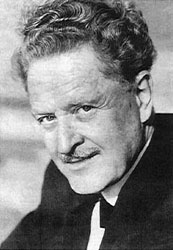

Nazim Hikmet: (1902 – 1963) the great Turkish poet and one of the greats of world literature at the turn of the offended.
Nazim was much more than a renewal of Turkish literature, censored for many years by his Communist militancy, He was to write the bulk of his work in very difficult conditions. Even so, Today it is recognized as one of the great innovators of contemporary Turkish poetry.
Cubapoesía pays tribute to a man and his work, genuine and lasting, a poet who did not make concessions of any kind nor in time, or to itself; because as he himself put: not We have to make concessions in the essentials.
"It was a tall man, well since, blonde, blue eyes and reddish skin, as an English. In the Turkish, most seemed to be what Jorge Amado - and thus said it jokingly friends when both were together - that the great singer of Turkey - grandson of a Pasha - dying without having seen his homeland.
Without knowing a word of their language, He delighted us and suspended hear him poems. They were like extremely musical songs, whose rhythm had taken the poet's popular in your country quarry.
Poor poet! As Nesval, the great Czech, "innocent myocardial" betrayed him our Ruben [Dario]. His life was a pure example of humanity and lyricism soldiers firmly, as he saw the content and the form in writing; of action and passion. Fifteen years had reactionary Turk in jail, and there he became ill to cure not never. That has died, and much love to his own pain, his people, and sing them, No redeem them».
Nicolás Guillén
"And so as a great poet of Turkish and universal at the same time, passed 30 of their 61 years of life, between prisons and exile, and he wrote the best of his work in these harsh conditions. It was always consistent. Wrong or right, He was honored. And he died as he had lived: standing"
Soliman Salom
“Nazin Hikmet poetry belong to the cultural domain of today's man and, for the breadth of its historical authenticity, it reaches a permanent life (…)
Tristan Tzara
“His poetry is saved from rhetoric, and sings to the Cuban revolution, or any other political or social event, without falling into the oratory (…) To Cuba came as a whole man, with their feelings, his thoughts, their feelings; with its contradictions and hopes".
Joyce Lussu
POEMS OF NAZIM HIKMET
"You still"
1948
Master in you the adventure of the boat sailing towards the pole
I love you the adventure of discovery of players
I love you far
I love you the impossible.
I dive in your eyes which in sunny jungle
and sweaty, hungry and angry
and with appetite for Hunter desire to bite your flesh.
I love you the impossible
but never despair...
When was with 17 years, the English had the dubious distinction of being the first pursuers, and they did so not only because of his activities as a member of the nationalist party, but also by his poems, already impregnated that vibration and emotion that would make him world famous.
Half of my heart is here, doctor,
But the other half is located in China,
In the army that descends into the Yellow River.
Every morning,
Every morning with Dawn,
My heart is shot to death in Greece.
And when sleep makes the prisoners,
When away from the infirmary last steps,
My heart is going, doctor,
It goes to an old wooden house, back in Istanbul.
In addition, doctor, more than ten years
I have nothing in my hands
To offer my brothers;
Just one block,
A Red Apple: my heart.
For all these things, doctor,
And through no fault of arteriosclerosis,
Neither of the nicotine, Neither of the prison,
I have this angina pectoris.
From my bed
I contemplate the night after the bars.
And despite all these walls
It crushed me chest,
My heart beats with the most distant star.
And here, under these lines, the shocking poem entitled "maybe my last letter to Memeth" ( his son)
On the one hand, the executioners,
As a wall separates us.
And also this pig heart
It has made me a wicked prank.
My child, My Memeth,
Maybe the luck
Do not allow me to see you again.
I know,
You'll be a boy
To the ear of corn like.
When young,
I was also so.
Tall, blonde, slender.
Vast are your eyes as the of your mother,
With a trail of grief sometimes bitter.
You'll have the immensely clear front
And a very beautiful voice.
Mine was atrocious.
When sing
you will have to tear the hearts,
and you'll know talk brilliantly,
I also was a master in the field,
When not irritated me.
Ah, Memeth,
What executioner will be
of hearts!
It is not easy to educate a child without his father,
Apenes not your mother.
I I could not find him joy.
To be you.
Your mother,
As strong silk, soft as silk.
Your mother,
It will be beautiful even at the same age of the grandmothers,
As that first year in I saw it,
When he was seventeen years old
On the shores of Bosphorus.
One morning, as usual
We parted until then!
It was not to see us ever more.
Count the days is difficult,
And one can not fill the world,
Memeth,
One can not Gorge.
Not living on Earth
As a tenant,
Or in nature as a tourist.
It lives in this world
As if it were your father's House.
Believes in grains, on Earth, in the sea,
But first and foremost in man.
Love the cloud, the machine and the book,
But first and foremost, love the man.
Feel the sadness
Branch-drying,
Of the planet that is extinguished,
Invalid animal.
But feels above all the sadness of the man.
Memeth, I will die maybe
Far from my language,
Away from my songs,
Far from my salt and my bread,
With the nostalgia of your mother and you,
And my people and my comrades.
In exile, but not abroad.
The 13 may of 1961 Nazim Hikmet arrived in Havana - by decision of the World Congress of peace- to deliver to Cuban President Fidel Castro the peace prize. During those days of may the Envoy talked captivated artists and workers, observed captivated the women and eventually captivated children.
His heart remained in Cuba and left us as a witness one of the most beautiful poems ever written never about the Cuban revolution: "Report in Havana".
Here we share some fragments of that poem
[…] I wander through the streets of Havana
I confuse trees with asphalt
I am not able to distinguish asphalt cars
rain Sun
the white clouds of azulisimas pools
I am confused the fruits with the women
I am not able to distinguish
kindergartens and freedom
freedom and the people of this city
[…] I confuse the monuments, statues and busts of José Martí with
photographs and lithographs of Fidel
I am confused Fidel with songs with Cha Cha Cha international
and the pachanga with Fidel
We are sosyalistas palante-palante
I am confused to Fidel with the 100,000 people who caught one back
other dance the rumba
I am not able to distinguish La Habana of Fidel.


Recent Comments